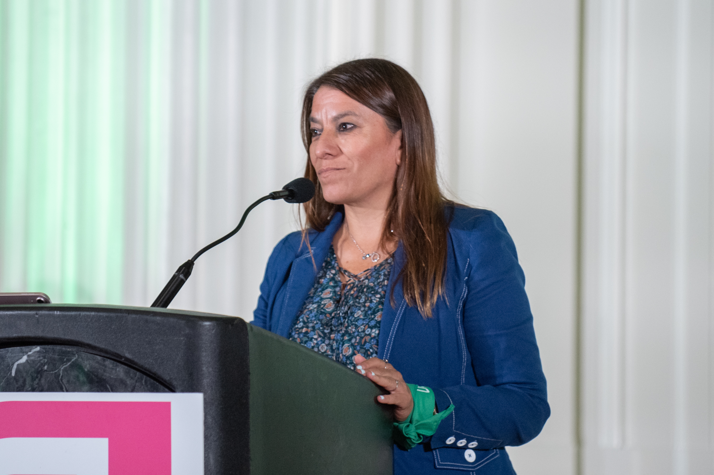
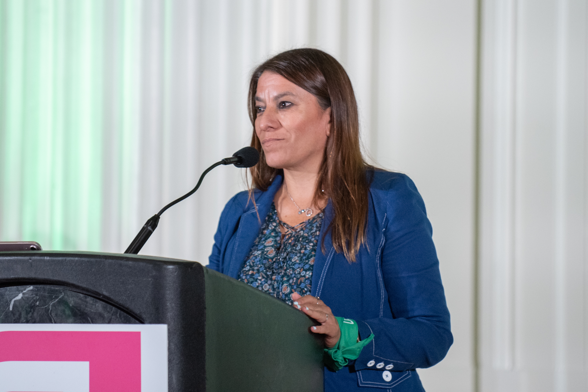

8 Actions You Can Take Today to Help Fight for Abortion Rights
I'm sad to report that Roe v Wade is officially dead. Trump's conservative Supreme Court justices overturned it only days ago, declaring that women do not have a Constitutional right to abortion after 50 years of lived experience that said the complete opposite.
But there is no time to lament what has been lost right now. There are much more important and useful things you should be focusing your energies on. I've deep searched the biggest pro life organizations in the USA to get a sense of what they are suggesting for immediate actions that we can all take.
Not all actions to fight for abortion rights are created equally; some of them are more about personal liberation and empowerment than producing tangible results. So I've decided to start with those things first, and we will work our way up the list to the most crucial actions you can (and absolutely should) take right away.
Sign Petitions & Pledges
Most of the sites in the full guide have pledges or petitions you can sign online, which may not carry as much weight as other activities, but it only takes a few minutes to enter your details and submit the forms. It can't hurt, right?
Read & Share Abortion Stories
.png)
.png)

The writer in me wants to place this item higher on this list, but doing so wouldn't exactly be prudent. We all know the power of a solid narrative. Effective storytelling is the key to so many areas of life that seem inaccessible to most people. It can change lives if it reaches the right people.
So take an hour or two out of your day to sit at your desk with a blank page in front of you, and write a short story about your experience with abortion, then submit it to the websites in this guide. Don't let the task intimidate you.
It doesn't have to be a novel. The one I wrote was only 229 words (you can read it on the next page if you'd like), so keep it short and sweet!
Talk About Abortion
Looking for pre-written content you can quickly copy and paste on sites like Twitter, Facebook, Instagram and others? Or maybe some attention-grabbing images with important information that others will want to retweet and share with their friends?
I've got you covered. I have scoured the web for these messaging resources and infographics from the amazing pro-choice organizations included in the full guide. I've compiled them all into a giant list, which you can find here.
However, do NOT limit the discussion to social media or online spaces! Abortion isn't an easy topic for everyone! And that's precisely why it needs to be talked about in person --- with your friends, family members, acquaintances, teachers, classmates, religious leaders, co-workers, colleagues, children --- basically anyone who will listen to what you have to say! That's how you remove the stigma from a social issue that never deserved one: you normalize it through the way you discuss it with those close to you.
Contact Your Reps & VOTE!
Out of all the actions suggested by the sites in this guide, the most important and impactful by far is: voting! There are plenty of tools in the full guide that will help you research the views of the representatives running for election in your state, so you can vote accordingly.
Vote for progressive candidates (female, when possible!) who have openly endorsed reproductive rights and made a public commitment to doing everything in their power to preserve women's rights. On a related note, there are also plenty of resources that will help you contact your local government officials by phone, email and more!
I don't know about anyone else, but I've been completely unimpressed with the Biden administration's lack of response to this crucial human rights issue so far. It's time to bring the heat! Don't be shy when reaching out to those running for office where you live. Tell them they need to put more pressure on Biden to act. He's made it pretty clear that he isn't going to do much on his own, so it's up to us to make it clear that we won't tolerate his silence and we demand more of our President.
Attend a Protest or Rally

There are several links and resources in the full guide that will help you find an upcoming reproductive rights protest near you.
Check out what you find in each tool listed here, then add a couple to your calendar when you can set the time aside.
I went to a rally in Portland, OR a couple years ago and it was a very positive experience.
Volunteer
 

If you have the time to spare, consider volunteering locally to support abortion rights.
There are events taking place in just about every major city across America on nearly a daily (if not, weekly) basis! If volunteering is something you feel passionately about, you should have no trouble finding an abundance of opportunities.
And remember that not all volunteering has to be local - there are calls for remote volunteering too.
Expose Fake Clinics
Pregnancy "resource" centers mislead women into thinking they are abortion clinics when that couldn't be further from the truth. They pay to run Google ads that show up when someone searches for phrases like "abortion clinic near me" and present themselves as actual medical facilities. They are NOT.
They just want to get you in their door so they can guilt, shame and hopefully talk you out of getting an abortion. They are sleazy liars who misrepresent the services they offer, which barely even exist. Does that make you as angry as it does me?!
Let's participate in exposing them for what they are. We can easily do this by contacting them and finding out how dishonest they are by pretending to be a pregnant person looking for abortion services. Once you catch them in a lie, head over to Google and Yelp and write a brief one star review.
While you're there, don't forget to upvote all the other one star reviews to really ruin their reputations.
Donate to Abortion Funds
If you can afford to, please consider donating to your local abortion fund or one in a different state!
These are organizations and groups that connect people in need of abortion care with the resources they need, whether that means travelling out of state, or getting financial assistance to receive care near home.